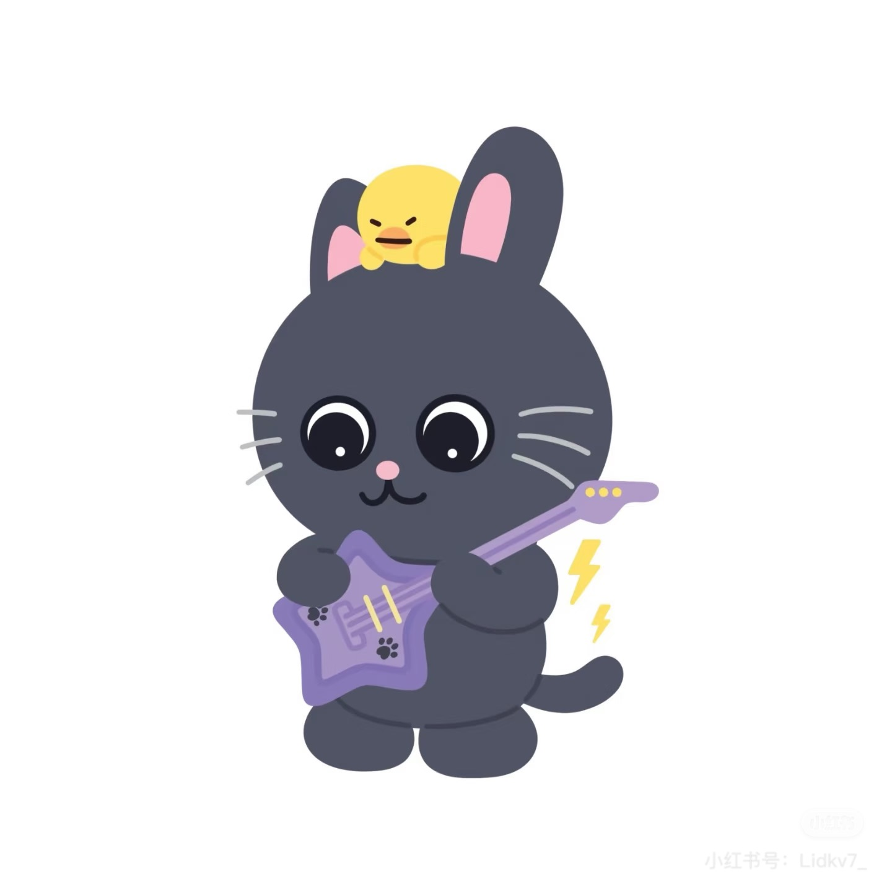
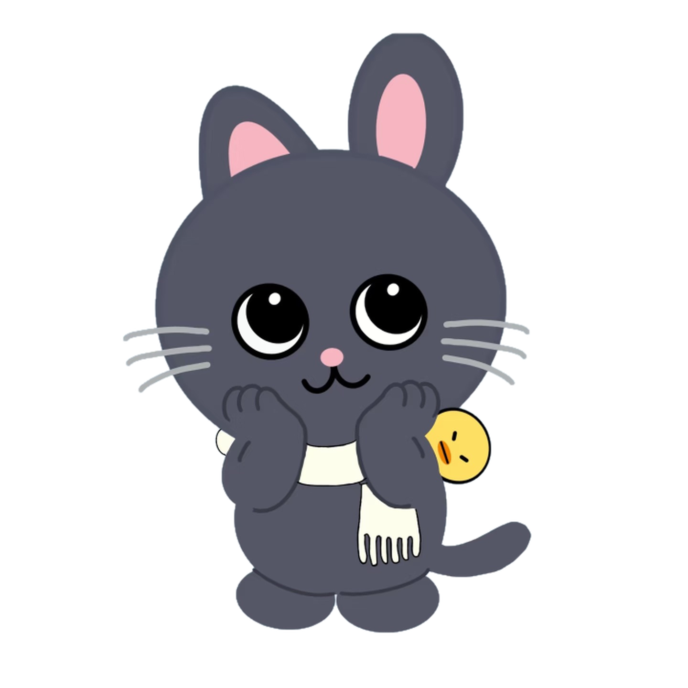

✦ V8.4 · PLUM UNIVERSE ✦Sachiの兔喵鸭
TOPIK ISachiの兔喵鸭
韩语宇宙 🐈⬛

안녕, Sachi! ♡
今天也一起加油！파이팅! 🎸
今天开始学习吧 ✨
LV.1 · 新手练习生
0 / 50 XP
오늘의 공부 · 今日任务
0今日已学
0已掌握
0连续天数
单词卡片第 1 张
안녕하세요✧ 点击卡片查看中文 ✧
你好
annyeonghaseyo
🌱 今日间隔复习
按记忆情况安排下次复习；旧版学习记录保留，复习计划从 V8 开始累计。
0今日待复习
0已安排复习
0易错词
准备开始
点击「开始复习」
📒 我的易错词本
🎮 单词挑战
选出正确的中文意思。每次答题都会更新掌握记录。
答对 0 / 0
학교
📒 TOPIK 韩语扩充词库
原版精选词＋开放韩语词库扩充；联网首次加载，成功后自动缓存供离线使用。等级为学习建议，非官方 TOPIK 分级。罗马音仅作辅助。
词库加载中
✏️ 添加单词
🏡 兔喵鸭的秘密基地
兔喵鸭的小屋，卧室里还有电吉他和贝斯 ♡
(˶ᵔ ᵕ ᵔ˶) 会再来滴～

🗺️ 韩语宇宙冒险地图
完成各站小测验，收集旅行印章。每站5道题，答对至少4道通关。
关卡
🎀 学习贴纸收藏册
累计完成学习日可解锁贴纸。
📱 iPhone Safari 安装指南
免费变成主屏幕小 App① 将网站部署到 HTTPS 地址（例如 GitHub Pages）。
② 用 iPhone Safari 打开网站。
③ 点 Safari 的「分享」按钮 →「添加到主屏幕」→「添加」。
④ 以后点兔喵鸭图标就能学习！
注意：直接打开本地 HTML 文件不能完整使用离线缓存与主屏幕安装功能。
② 用 iPhone Safari 打开网站。
③ 点 Safari 的「分享」按钮 →「添加到主屏幕」→「添加」。
④ 以后点兔喵鸭图标就能学习！
注意：直接打开本地 HTML 文件不能完整使用离线缓存与主屏幕安装功能。
💾 我的学习存档
升级沿用旧版存档。学习数据保存在当前浏览器；清理数据或换设备前请导出备份。